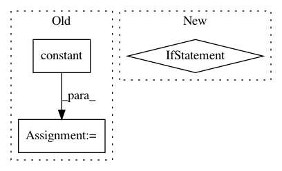

4d6cb5a6ea1fc8632a96591582b88d7088fafbf2,tensorlayer/layers/normalization.py,InstanceNorm,build,#InstanceNorm#Any#,420
Before Change
// self.name + "\offset", [inputs.get_shape()[-1]], initializer=tf.compat.v1.initializers.constant(0.0),
// dtype=LayersConfig.tf_dtype
// )
self.offset = self._get_weights(
"offset", shape=[inputs_shape[-1]], init=tf.compat.v1.initializers.constant(0.0)
)
// self.add_weights([self.scale, self.offset])
def forward(self, inputs):
After Change
params_shape, self.axes = self._get_param_shape(inputs_shape)
self.beta, self.gamma = None, None
if self.beta_init:
self.beta = self._get_weights("beta", shape=params_shape, init=self.beta_init)
if self.gamma_init:
self.gamma = self._get_weights("gamma", shape=params_shape, init=self.gamma_init)
def forward(self, inputs):
In pattern: SUPERPATTERN
Frequency: 4
Non-data size: 3
Instances
Project Name: tensorlayer/tensorlayer
Commit Name: 4d6cb5a6ea1fc8632a96591582b88d7088fafbf2
Time: 2019-05-11
Author: yingda.yin@gmail.com
File Name: tensorlayer/layers/normalization.py
Class Name: InstanceNorm
Method Name: build
Project Name: keras-team/keras
Commit Name: cc0e60c1012b7c72eeb5ea0c41b8a2045177ae5e
Time: 2016-07-19
Author: francois.chollet@gmail.com
File Name: keras/backend/tensorflow_backend.py
Class Name:
Method Name: relu
Project Name: ray-project/ray
Commit Name: 1d4823c0ec446e93d00df8ca654db4b45b63b3d4
Time: 2020-04-03
Author: sven@anyscale.io
File Name: rllib/utils/schedules/tests/test_schedules.py
Class Name: TestSchedules
Method Name: test_constant_schedule
Project Name: microsoft/nni
Commit Name: 55b557f17385ca10b8a3e8fb8bbb0d3799906db5
Time: 2019-11-20
Author: 38930155+chicm-ms@users.noreply.github.com
File Name: src/sdk/pynni/nni/compression/tensorflow/builtin_pruners.py
Class Name: FPGMPruner
Method Name: _get_min_gm_kernel_idx